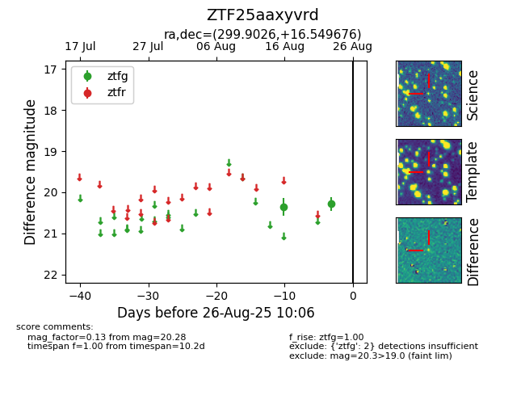

Target ZTF25aaxyvrd at 2025-08-26 10:06, see:
FINK: fink-portal.org/ZTF25aaxyvrd
Lasair: lasair-ztf.lsst.ac.uk/objects/ZTF25aaxyvrd
ALeRCE: alerce.online/object/ZTF25aaxyvrd
alt names
ZTF25aaxyvrd (ztf,fink)
coordinates:
equatorial (ra, dec) = (299.9026,+16.54968)
galactic (l, b) = (55.5386,-6.90114)
photometry
last ztfg=20.28
2 ztfg detections
